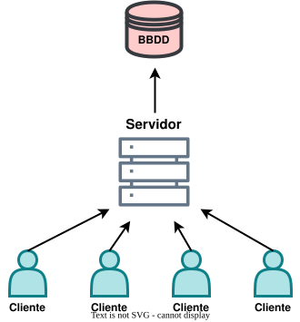
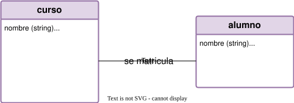
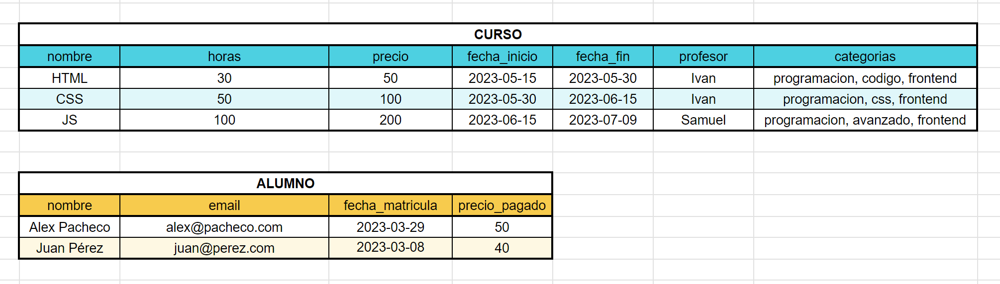
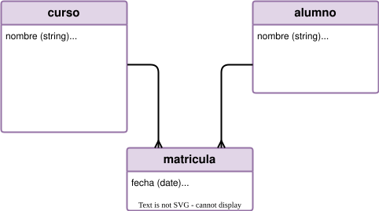
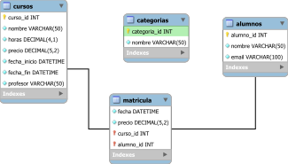
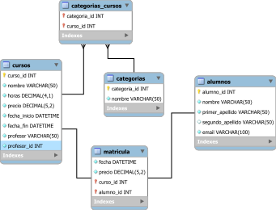
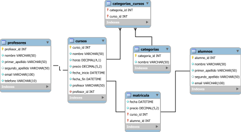

SQL con SQLite
Conceptos básicos de bases de datos
¿Qué es una base de datos?
Una base de datos es un conjunto de datos que se almacenan y organizan de forma estructurada para que sean fácilmente accesibles y gestionables.

Tipos de Bases de Datos
- SQL (Structured Query Language) o Relacionales
- NoSQL o No relacionales
👉 SQL (Structured Query Language) o Relacionales
- Son las bases de datos estándar, las de toda la vida.
- Sirven sobre todo para cuando tenemos datos que se relacionan entre tablas.
- Cuando todos los registros vayan a tener los mismos tipos de datos.
- Cuando necesitemos relaciones entre unas tablas y otras.
- La estructura es mucho más rígida.
👉 NoSQL o No relacionales
- Están diseñadas para hacer peticiones más rápidas.
- Tienen menos restricciones.
- Cuando simplemente necesitemos guardar datos sin necesidad de relacionar entre unos datos y otros.
- Son más escalables y se adaptan mejor a datos no estructurados.
- Unos registros y otros pueden tener distintos datos guardados.
- Big Data
Modelos de datos
Tipos de datos
Lo que podemos guardar en cualquier campo de una tabla.
| TIPO | DESCRIPCIÓN |
|---|---|
| TEXT | Cualquier tipo de texto. |
| INTEGER | Números enteros sin coma. |
| REAL | Números decimales. |
| NULL | El valor null, es decir, nada |
| BLOB | Datos binarios, es decir archivos como fotos |
| NUMERIC | Acepta tanto enteros como decimales pero deja a SQLite que establezca el tipo ¡ojo con este! |
Tipos de datos
¿Puedo usar otros tipos?
Sí, podemos usar otros tipos de datos, pero SQLite los convierte a su tipo real. Por ejemplo, si declaramos
un campo como VARCHAR(255) lo convertirá a TEXT.
| Tipo declarado | Afinidad real |
|---|---|
| VARCHAR(255) | TEXT |
| DECIMAL | NUMERIC |
| BOOLEAN | NUMERIC |
| DATETIME | NUMERIC |
| FLOAT | REAL |
| INT | INTEGER |
| TINYINT | INTEGER |
¿Cómo trabajamos con las bases de datos de SQLite?
A diferencia de otras bases de datos, SQLite no tiene un servidor al que conectarse. En su lugar, se trabaja directamente con un archivo de base de datos. Este archivo puede estar en el disco duro o guardado en la nube.
➡ tareas.db
¿Cómo vemos nuestras bases de datos?
Podemos ver nuestras bases de datos usando varios programas, pero el más sencillo es DB Browser for SQLite. Este programa nos permite ver y editar nuestras bases de datos de forma sencilla y visual.
También podemos usar VSCode con alguna extensión. Una muy buena es DBCode.
Antes que nada, hay que diseñar nuestra base de datos
Lo primero y más importante es entender cómo se va a organizar cada una de nuestras bases de datos. Para ello solemos hacer una serie de pasos en los que veremos todas las necesidades que tendrá nuestra base de datos.
1. MODELO CONCEPTUAL - Entender los requerimientos
Modelo de negocio
Lo primero que hay que hacer es organizar bien nuestro modelo de negocio, es decir, cómo funciona nuestra empresa y qué tipos de datos vamos a querer guardar y de qué forma.
Aquí podemos hacer algún mapa conceptual de lo que pueda contener la BBDD.

Lo pasamos a excel para ver cómo se verían nuestros datos una vez añadidos los registros.

2. MODELO LÓGICO:
-
Ahora hay que sacar del modelo conceptual toda la informaciñon que vamos a necesitar para crear nuestra
base de datos.
- Entidades/Tablas
- Atributos/Columnas
- Llaves/Primary Key, Foreign Key, Unique
- Relaciones entre tablas
ENTIDAD / tabla
Se considera entidad a cualquier elemento de nuestro modelo de negocio 👉 nombre, persona, lugar, cosa, evento, etc.
Cada entidad se convertirá en una tabla dentro de nuestra BBDD.
ATRIBUTOS / Columnas
Cada uno de los datos que tiene una entidad.
Ej: nombre, email, fecha_compra, telefono, edad, esta_activo, etc.
LLAVES
Son identificadores únicos para cada columna. Nos ayudarán a relacionar las tablas entre sí.
- Primary Key → Identificador único que tiene cada registro.
- Foreign Key → Son las que van a permitir la relación entre una tabla y otra.
- Unique → No sería una llave al uso, pero sí que es un tipo de dato que va a ser único en toda su tabla.
RELACIONES
Son ese tipo de asociación que hay entre las tablas.
| 1. | 1 a 1 (1 to 1) 👉 | empleado ↔ DNI |
| 2. | 1 a Muchos (1 to N) 👉 | pais ⇉ ciudad |
| 3. | Muchos a Muchos (N to M) 👉 | alumno ⇇⇉ curso |
Por último:
Al saber las relaciones que hay entre las tablas, podemos empezar a darnos cuenta de que va a haber distintos tipos de tablas. TYo lo divido en 3 tipos de tablas:
1. Tabla de datos:
La que guardará todos los datos que nos interesan.
Una tabla profesor tendrá una tabla y guardará su:
| nombre | apellidos | etc. | |
|---|---|---|---|
| Ivan | Luengo | ivluengo@gmail.com | – |
2. Tabla de catálogo:
Guardará un listado de “tipos” y tendrá un número determinado de datos que usualmente no varía en el tiempo. Esta entidad la relacionaremos con una tabla de datos.
Es la típica tabla “métodos de pago” o “tipo de usuario” en la que guardaremos los 3 o 4 tipos que hay.
| id | metodo_de_pago |
|---|---|
| 1 | tarjeta |
| 2 | transferencia |
| 3 | efectivo |
3. Tabla de tipo enlace/pivote:
Es una entidad que nos sirve para relacionar unas tablas con otras.
Una tabla que guarde la relación entre los cursos a los que se ha matriculado cada alumno
| id | alumno_id | curso_id |
|---|---|---|
| 1 | 5 | 2 |
| 2 | 3 | 2 |
| 3 | 2 | 4 |
Nos hemos dado cuenta de que la relación curso > alumnos, al ser N to N requería una
entidad intermedia llamada matrícula.

👍
FOREIGN KEY CONSTRAINTS
Siempre que tengamos una llave foránea deberíamos añadirle unas restricciones para definir qué hacer cuando se ACTUALICE un dato o cuando se BORRE un dato de la tabla relacionada.
Atributos para la Foreign Key:
- RESTRICT 👉 Si intentamos borrar un profesor de la BBDD, no nos va a dejar porque sabe que ese profesor está relacionado con un curso.
- CASCADE 👉 Si hay alguna modificación o borrado de un profe, también se va a actualizar el registro del curso o a borrar.
-
SET NULL 👉 Si hay algún cambio, se cambiará el valor del
campo
profesor_ida null dentro de la tablacursos. -
SET DEFAULT 👉 Si hay algún cambio, se cambiará el valor
del campo
profesor_ida un valor por defecto dentro de la tablacursos.
3. MODELO FÍSICO
Una vez terminado, podemos crear nuestro modelo final. Que será distinto dependiendo de qué tipo de base de datos usemos.
Normalización
La normalización son una serie de normas que hacen que nuestras bases de datos estén mucho mejor estructuradas y con muchos menos datos redundantes.
1. PRIMERA FORMA NORMAL 👉 Cada celda debería tener un solo valor indivisible y no deberíamos tener columnas repetidas.
Por ejemplo, si quisiéramos crear una columna dentro de la tabla cursos que se llamara
categorias, sería un error, primero porque habría varias categorías separadas por coma y eso es
difícil de trabajar.
| id | nombre | horas | categorias |
|---|---|---|---|
| 1 | SQL | 20 | SQL, Python, Java |
| 2 | Python | 30 | Python, SQL |
| 3 | Java | 40 | Java, SQL |
❌❌❌
Si, en cambio, quisieramos crear 2 o 3 columnas llamadas categoria_1, categoría_2,
etc. habría columnas repetidas.
| id | nombre | horas | categoria_1 | categoria_2 | categoria_3 |
|---|---|---|---|---|---|
| 1 | SQL | 20 | SQL | Python | Java |
| 2 | Python | 30 | Python | SQL | |
| 3 | Java | 40 | Java | SQL |
En este caso lo mejor es crear una tabla de tipo catálogo llamada categorias.

| id | categoria |
|---|---|
| 1 | SQL |
| 2 | Python |
| 3 | Java |
| 4 | JavaScript |
El caso es que esta tabla tiene una relación “Muchos a Muchos” con la tabla
cursos y eso no existe en SQL. En realidad, siempre que pasa esto creamos otra
tabla de enlace como la de matriculas.

Además, también deberíamos separar aquellos campos que puedan ser divididios, como nombre en
“nombre”, “apellido” o dirección en
“calle”, “numero”, y
“codigo_postal”.

2. SEGUNDA FORMA NORMAL 👉 Ninguna tabla debería tener celdas que no hablaran de “esa” y “solo esa” entidad.
En este caso, si tuviéramos un campo en la tabla cursos que se llamara profesor,
acabaríamos teniendo a lo mejor varios registros con el mismo nombre del profesor porque imparte varios
cursos.
Lo suyo sería sacarlo a otra tabla y relacionarla con esta. Esto lo veremos siempre cuando veamos CAMPOS REPETIDOS.
| id | nombre | horas | profesor |
|---|---|---|---|
| 1 | SQL | 20 | Ivan |
| 2 | Python | 30 | Ivan |
| 3 | Java | 40 | Pablo |
| 4 | JavaScript | 50 | Ivan |
❌❌❌
| Cursos | |||
|---|---|---|---|
| id | nombre | horas | profesor_id |
| 1 | SQL | 20 | 2 |
| 2 | Python | 30 | 2 |
| 3 | Java | 40 | 13 |
| 4 | JavaScript | 50 | 2 |
↔
| Profesores | |
|---|---|
| id | nombre |
| 2 | Ivan |
| 13 | Pablo |
✅✅✅

3. TERCERA FORMA NORMAL 👉 Ninguna columna en una tabla debería ser derivada de otras columnas.
Por ejemplo, si tenemos una columna nombre y otra columna apellido, no deberíamos
tener otra columna llamada nombre_completo porque esa información ya la podemos sacar de las
otras dos.
Este ejemplo también lo vemos cuando tenemos columnas que son cálculos matemáticos de otras columnas.
EN RESUMEN
Intenta no tener código repetido ni datos que no formen parte de una tabla.
Como consejo final
INTENTA NO HACER TABLAS DE ABSOLUTAMENTE TODO
(solo lo que haga falta para tu modelo de negocio)
Ejercicio ejemplo 01
Se quiere diseñar una Base de Datos para controlar el acceso a las pistas deportivas de Zaragoza. Se tendrán en cuenta los siguientes supuestos:
- Todo aquel que quiera hacer uso de las instalaciones tendrá que registrarse y proporcionar su nombre, apellidos, email, teléfono, dni y fecha de nacimiento.
- Hay varios polideportivos en la ciudad, identificados por nombre, dirección, extensión (en m2).
- En cada polideportivo hay varias pistas de diferentes deportes. De cada pista guardaremos un código que la identifica, el tipo de pista (tenis, fútbol, pádel, etc.), si está operativa o en mantenimiento, el precio y la última vez que se reservó.
- Cada vez que un usuario registrado quiera utilizar una pista tendrá que realizar una reserva previa a través de la web que el ayuntamiento ha creado. De cada reserva queremos registrar la fecha en la que se reserva la pista, la fecha en la que se usará y el precio. Hay que tener en cuenta que todos los jugadores que vayan a hacer uso de la pista deberán estar registrados en el sistema y serán vinculados con la reserva.
THE END
🔚